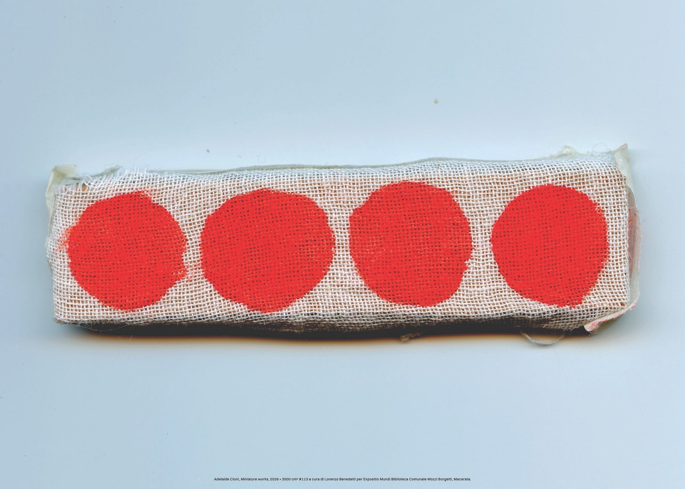
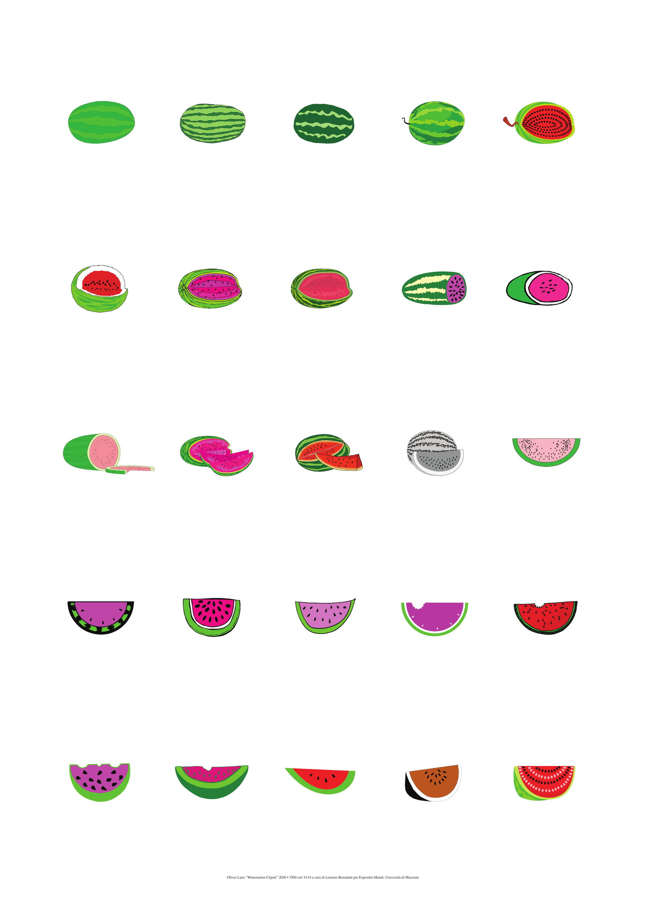
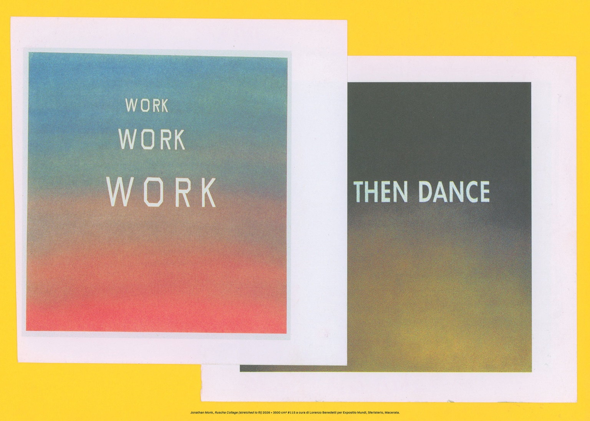
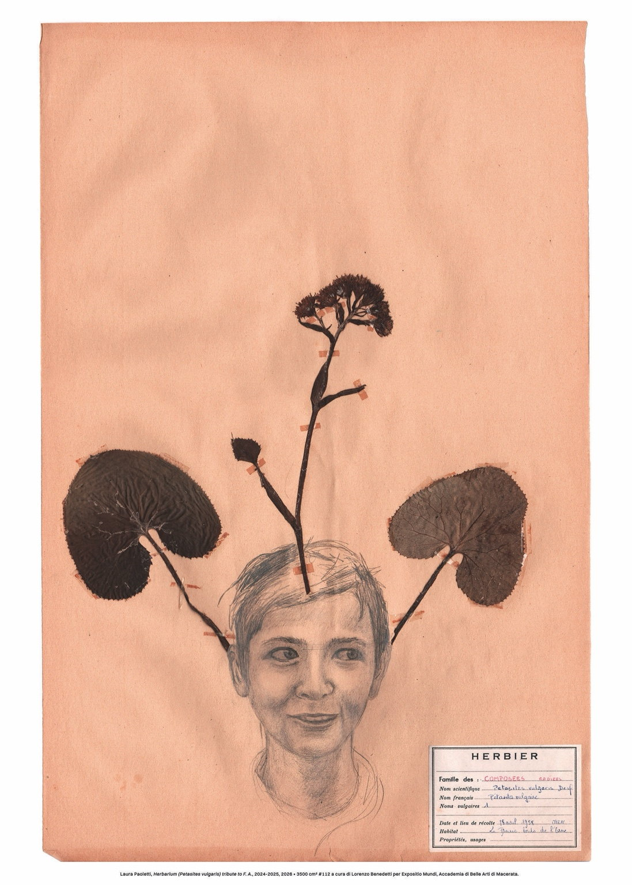
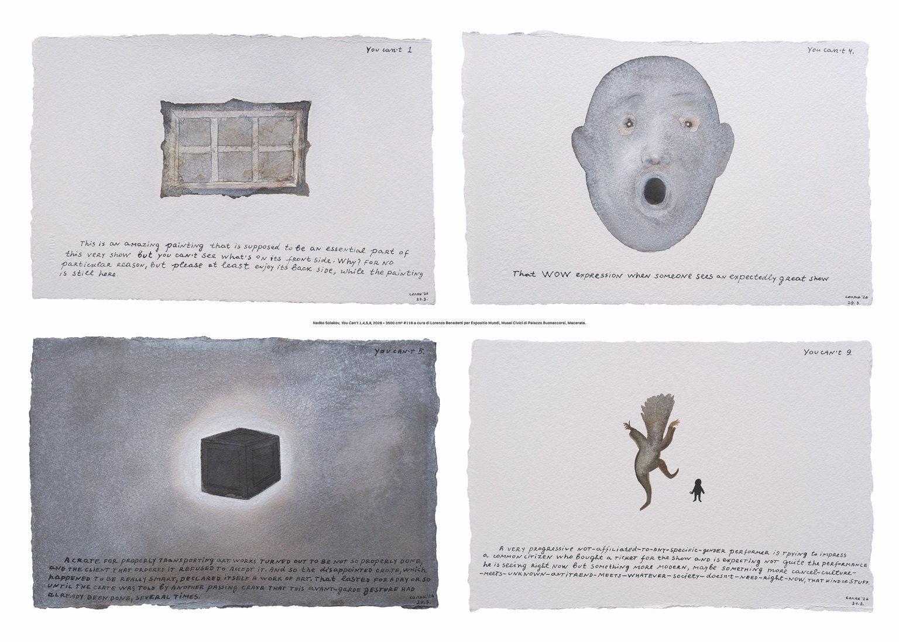

Adelaide Cioni, Oliver Laric, Jonathan Monk, Laura Paoletti, Nedko Solakov
Posters #112 and #116
Expositio Mundi
- The exhibition as medium
the Civic Museums of Palazzo Buonaccorsi, the Sferisterio, the Mozzi Borgetti Library, the University of Macerata, the Academy of Fine Arts
10 July 2026 - 10 January 2027
Macerata

Adelaide Cioni
Oliver Laric
Jonathan Monk
Laura Paoletti
Nedko SolakovThese posters accompany and expand the exhibition itinerary, becoming an integral part of the exhibition’s dispositif. They are not simply derivative images or communication materials, but works conceived to circulate, to be distributed free of charge, and to reach the public in a more open, mobile and democratic dimension.
Within Expositio Mundi, the exhibition is understood as a cultural instrument capable of activating relationships between works, spaces, institutions and citizens. In this sense, the poster project contributes to extending the exhibition beyond the exhibition rooms, spreading throughout the city and through the key places involved in the project: the Civic Museums of Palazzo Buonaccorsi, the Sferisterio, the Mozzi Borgetti Library, the University of Macerata, the Academy of Fine Arts and the other partner venues.
The presence of 3500 cm² also enters into dialogue with the work of Felix Gonzalez-Torres, whose practice often questioned the traditional idea of the artwork as a stable and unique object, opening instead to the possibility of distribution, multiplication and public participation. From this perspective, the poster becomes a medium through which the work can move beyond the perimeter of the exhibition and turn into a shared form of experience.
This new series of posters therefore confirms one of the central points of Expositio Mundi: the exhibition as medium, as public space and as a system for the dissemination of cultural values. Through accessible images, distributed free of charge and present in different points of the city, 3500 cm² contributes to the construction of a distributed exhibition, in which contemporary art is not only displayed, but put into circulation.
Posters for Peace - 3500 cm²
Art as an innovative tool for understanding migration
At both European and Italian level, migration policies are focused on a security-based approach which, by treating migration as a matter of public order rather than as a phenomenon connected to economic and social dynamics, is aimed at countering it even before seeking to understand it. As a result, the significant demographic and economic opportunities offered by migration are pushed into the background, or even denied altogether. The need to find new and more effective tools to narrate and explain migration can therefore no longer be considered merely a cultural or humanitarian issue. Rather, it appears as a crucial question for a prosperous and peaceful future for the European continent. Recognising this need, over the past ten years Fondazione Città della Pace has sought to disseminate, both in schools and through public initiatives, data collected and processed in official studies and reports by ISTAT, Eurostat, the UN agencies UNHCR and IOM, as well as by the IMF, the OECD, Italian and international universities, and independent and authoritative non-governmental organisations. However, from the very beginning of the campaign it became clear that simply presenting and highlighting factual data was not enough, and that a more effective interpretative key was needed in order to bring young people closer to an understanding of the migration phenomenon. How can we move beyond the dominant narrative, based instead on a supposed “emergency” caused by an unlikely “invasion”, repeated almost obsessively across communication channels and political debate? Contemporary art has proved to be an effective tool for achieving this objective. Public art in particular makes it possible to develop a new way of narrating the deeper causes of migration: climate change, growing inequalities, and human rights. Over the years, we have carried out a number of experiments involving artists, refugees hosted within SAI programmes, and members of the host communities in artistic initiatives. These have created small social incubators capable of bringing participants into dialogue with the context of reception, while providing tools for building constructive exchange within contemporary society, in order to understand and make explicit the causes of migration.
The project
As part of the integration activities of the SAI project of the Province of Potenza, the project 3500 cm², conceived and developed by curator and art critic Lorenzo Benedetti, is proposed. This project was created to move art outside its conventional contexts and make it available in a direct, accessible and shared form. The project involves the production of two new posters by contemporary artists, specifically Giovanni Giaretta and the duo Claire Fontaine, conceived as tools for cultural dissemination and public access to contemporary art, as well as to the themes of peace and sustainability. Rather than a traditional exhibition, the initiative takes the form of a public presentation of two new editions that the public will be able to collect free of charge, taking an artwork with them and allowing it to enter the spaces of everyday life. In this case, the free distribution of posters produced by artists on the theme of peace takes on a particular meaning, as it is part of the awareness-raising activities of the SAI reception project of the Province of Potenza and of the initiatives promoted by Città della Pace, an organisation working on issues of reception, rights, inclusion and collective responsibility. The Foundation links the idea of peace to concrete practices of respect for human rights, the overcoming of inequalities, and the construction of more open and supportive communities. The presence of Giovanni Giaretta and Claire Fontaine allows this intervention to be articulated through two very different yet equally incisive artistic practices. Giaretta, an artist and filmmaker born in Padua in 1983 and based in Amsterdam, develops a practice centred above all on moving images, weaving together images, texts and sounds in works that introduce suspended, estranging and visionary elements into reality. Claire Fontaine, a feminist conceptual artist founded in Paris in 2004, develops a practice that addresses themes of language, power, alienation and the possibility of emancipation, redefining the artwork as a critical and political space. Taken together, the two new posters do not illustrate peace in a rhetorical or celebratory way, but rather question its complexity, entrusting the image with the possibility of opening up a space for reflection and awareness.
Public presentation of the project
Public presentation of the project
In Potenza, the 3500 cm² project thus takes the form of a simple and radical gesture: placing two artists’ works into circulation free of charge, so that art can leave the library, reach new contexts and continue to act within social space as a shared experience, a visual memory and an opportunity for thought.
The choice of the Biblioteca Nazionale di Potenza as the venue for the presentation of the project, scheduled for 26 May 2026, further reinforces this dimension. As a place dedicated to knowledge, education and public consultation, the library becomes here a space in which art is not merely presented, but put into circulation. The poster, an essential and democratic format, is thus confirmed as a device capable of expanding the audience for art and transforming a simple gesture — taking an image, carrying it away, displaying it, preserving it — into a form of cultural participation.
The posters produced specifically for this occasion, within the framework of the SAI project of the Province of Potenza managed by Arci Basilicata, will be presented during a public meeting by Lorenzo Benedetti, an art critic and curator with extensive international experience.
Lorenzo Benedetti will then be in conversation with Professor Anna Lisa Tota, Deputy Rector of Roma Tre University, who coordinated a highly interesting project entitled Tamigrart, which concluded in February 2026 with the conference “Cartographies of Hope: Art, Memories and Resilience in Migratory Processes”, and in which Fondazione Città della Pace also collaborated.
Professor Tota will present the results of the Tamigrart project, which explored the relationships between art, traumatic events and resilience, with particular attention to two different types of diasporic memories: a) individual, collective and public memories of forced migration across the Mediterranean; and b) individual, collective and public memories of migrants fleeing the war in Ukraine. The main idea of the Tamigrart project was to study the relationships between artistic representations and political articulation, with the aim of adding new dimensions, particularly with regard to the question of achieving historical truth and reconciliation.
The artists and speakers
Claire Fontaine
Claire Fontaine is a feminist conceptual artist founded in Paris in 2004. From the outset, the project defined itself as a collective and impersonal practice, adopting the name of a well-known brand of school notebooks in order to critically question the relationships between subjectivity, production, language and power. Claire Fontaine’s work addresses themes such as alienation, political crisis, the condition of the contemporary individual, forms of systemic violence and the possibility of emancipation, through the use of texts, neon works, sculptures, installations, videos and appropriations. Her research is based on the idea that the artwork can function as a critical device capable of calling into question the symbolic and social codes that regulate everyday life. Over the years, Claire Fontaine has established itself as one of the most recognisable presences in international contemporary art, developing a practice that brings together theoretical radicality, formal clarity and political tension.
Giovanni Giaretta
Born in Padua in 1983, Giovanni Giaretta lives and works in Amsterdam. His practice develops primarily through film, video, installation and writing, and emerges from a research process that connects images, texts and sounds. His works often move along the boundary between the observation of reality and imaginative displacement, introducing visionary, estranging or suspended elements that transform apparently ordinary situations into perceptual experiences charged with ambiguity and attention. After studying Design and Production of Visual Arts at IUAV University in Venice, he took part in residency and training programmes in Venice, Paris, Amsterdam and New Orleans. Since 2019, he has also been teaching in the Moving Image and Fine Art departments at the AKI Academy of Art & Design in Enschede. His works and films have been presented in international institutions, festivals and exhibition spaces, confirming a practice in which the language of moving images becomes a tool for listening, narration and the displacement of the visible.
Lorenzo Benedetti
Lorenzo Benedetti (1972, Rome) is a curator and art historian, currently curator at Kunstmuseum St. Gallen. He studied Art History at Sapienza University of Rome from 1991 to 1995 and took part in the Curatorial Training Programme at De Appel, Amsterdam, in 1999. He is currently a visiting professor at the Rijksakademie in Amsterdam. He writes a column for Cura.magazine entitled “Ritratti nello spazio espositivo”. From 2008 to 2014 he directed De Vleeshal Art Centre in Middelburg, the Netherlands. In 2013 he curated the Dutch Pavilion at the Venice Biennale. In 2005 he founded the Sound Art Museum in Rome. He was director of Volume! in Rome and curator at Marta Herford Museum in Herford, Germany. He has been guest curator at the Kunsthalle Mulhouse, France, and taught at the Jan van Eyck Academy in Maastricht.
Anna Lisa Tota
Anna Lisa Tota is Full Professor of Sociology of Cultural and Communication Processes at the Department of Philosophy, Communication and Performing Arts of Roma Tre University. Since 2022 she has served as Deputy Rector of the University, with responsibility for coordinating Third Mission activities. Her teaching includes Sociology of Communication, Sociology of Music, Artistic Communication and Visual Communication. She has been Gastprofessor at the University of St. Gallen, School of Economics, Law and Social Sciences, St. Gallen, Switzerland. Since 30 May 2025, she has also held responsibility for Gender Policies. She is also President of the Board of Directors of the “Oscar, Bice e Giulio Cesare Castello” Foundation of Roma Tre University. She is a member of the Academic Senate of Roma Tre University and serves on the Budget and Regulations Committee.RÄ DI MARTINO — Kant Can’t
A-Head Project
A-Head Project
Art Meets Care: A-Head Project and 3500cm² inaugurate the first permanent collection in Mental Health Centers
Saturday, October 18, 2025 – 11:00 a.m.
Mental Health Center of Vetralla (DSM Viterbo, District C)
Vetralla (VT), October 18, 2025
On Saturday, October 18 at 11:00 a.m., the first intervention of the 3500cm² project will be inaugurated at the Centro di Salute Mentale of Vetralla (DSM Viterbo, District C). The project is curated by Lorenzo Benedetti in collaboration with A-Head Project by Angelo Azzurro Onlus, with the support of President Dr. Stefania Calapai and Dr. Francesco Cro, head of the center.Rome 2025
This initiative stems from the desire to rethink the experience of contemporary art beyond traditional exhibition spaces, fostering new connections between artworks and those who encounter them. It marks a new challenge in the synergistic collaboration between art and psychiatry: over the years, A-Head Project by Angelo Azzurro Onlus has combined contemporary art with psychiatry in the fight against the stigma of mental illness.
The 3500 cm² project aims to expand the reach of contemporary art by taking it beyond conventional venues such as museums. This innovative initiative transforms hospitals and mental health centers into more welcoming and stimulating environments through the presence of contemporary artworks.
Curated by Lorenzo Benedetti in collaboration with A-Head Project, President Dr. Stefania Calapai, and Dr. Francesco Cro, the project will launch in May, supported by A-Head of Angelo Azzurro Onlus, and will involve various facilities across the Lazio region, with a specific focus on psychiatric settings.
The project includes two complementary approaches: • A permanent core of artworks: 30 posters will be permanently installed within psychiatric facilities, enhancing the quality of the spaces and offering patients and healthcare staff daily contact with art. • Free distribution of posters at each location, allowing patients, families, visitors, and healthcare workers to take home an artwork and engage with new visual languages.
The artworks will be installed in various mental health centers across Lazio, including residential and semi-residential facilities, both public and affiliated.
Through 3500 cm², art becomes more than decoration—it serves as a tool for connection, cultural stimulation, and environmental improvement. The initiative seeks to: • Actively engage patients, healthcare staff, and visitors in an inclusive artistic experience; • Provide new visual and cultural stimuli, contributing to psychological well-being; • Highlight the social role of contemporary art, demonstrating its ability to generate positive impacts even in non-conventional contexts.
3500 cm² represents an innovative model of artistic accessibility—a project that brings art closer to the public and transforms care environments into spaces of encounter and inspiration.